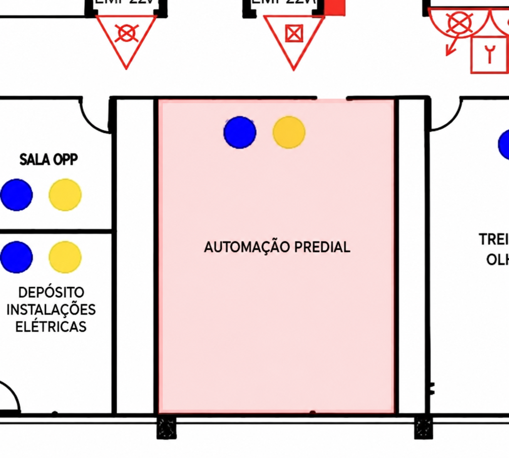

SETOR DE AUTOMAÇÃO
O setor de automação é responsável pelo desenvolvimento, instalação, programação e manutenção de sistemas que controlam máquinas e processos industriais. Essas atividades envolvem equipamentos elétricos, sensores, painéis de comando, atuadores e máquinas automatizadas. Por isso, é importante seguir os procedimentos de segurança, utilizar os Equipamentos de Proteção Individual (EPIs) adequados e garantir que os sistemas estejam em condições seguras de funcionamento.

Riscos no Setor
- Choques elétricos
- Contato com partes móveis de máquinas
- Esmagamentos e prensamentos
- Acionamento inesperado de equipamentos
- Rompimento de mangueiras e liberação de pressão
- Quedas e tropeços causados por cabos e obstáculos
Medidas de Proteção Coletiva
- Instalação de proteções físicas nas máquinas
- Uso de sensores de segurança e dispositivos de intertravamento
- Botões de parada de emergência acessíveis
- Isolamento e sinalização das áreas de risco
- Desenergização e bloqueio dos equipamentos durante a manutenção
- Inspeção e manutenção preventiva dos sistemas automatizados
Normas Técnicas e Regulamentadoras
- NR-01: Disposições Gerais e Gerenciamento de Riscos Ocupacionais
- NR-06: Equipamentos de Proteção Individual - EPI
- NR-10: Segurança em Instalações e Serviços em Eletricidade
- NR-12: Segurança no Trabalho em Máquinas e Equipamentos
- NR-17: Ergonomia
- NR-23: Proteção Contra Incêndios